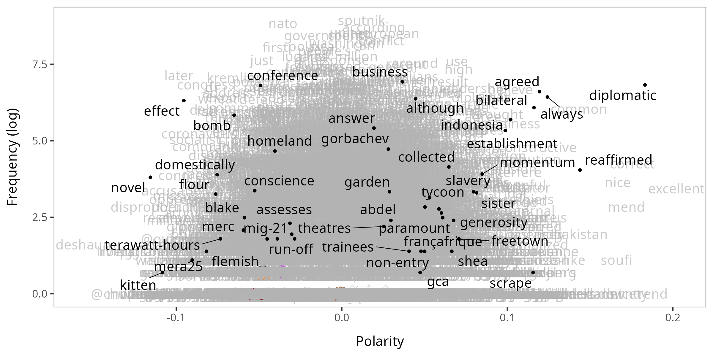
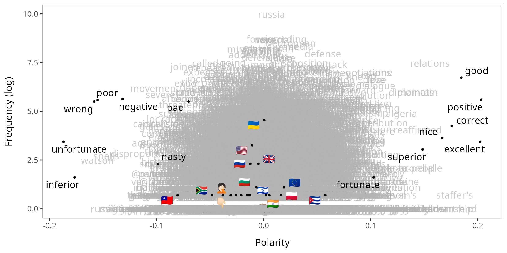
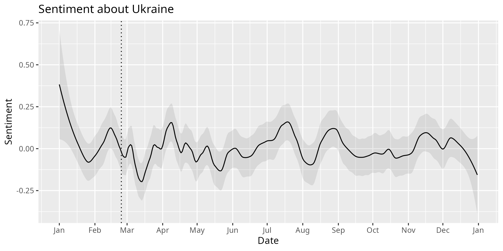
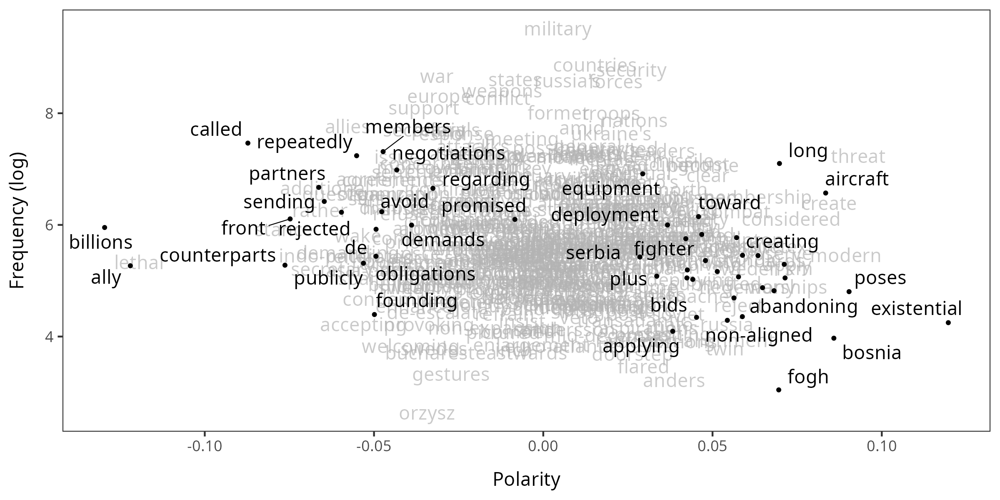
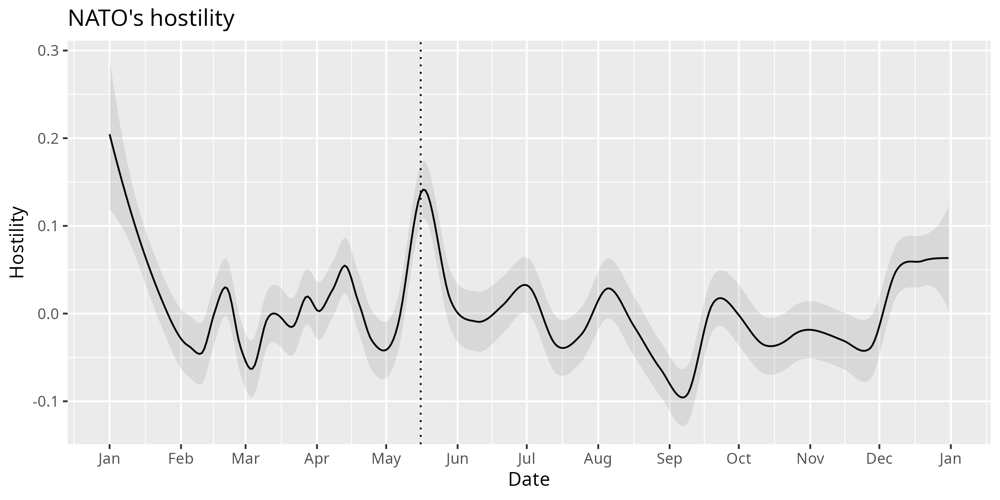

Introduction to LSX
Basics about Latent Semantic Scaling
Source:vignettes/pkgdown/introduction.Rmd
introduction.RmdThis vignette aims to introduce you to basic and advanced usage of the LSX package to perform Latent Semantic Scaling (Watanabe, 2021). It is an semisupervised algorithm to estimate polarity of documents on a user-defined scale (e.g. sentiment or hostility) without manually labeled training set.
We perform LSS in two steps: (1) estimating polarity of words and (2) predicting polarity of documents. In the first step, the algorithm computes semantic similarity between user-provided seed words and other words in the corpus to assign polarity scores to them. In the second step, it computes polarity scores of documents by averaging the polarity scores of words with weights proportional to their frequency in the documents.
We will analyze a collection of articles published by the Russian state media, Sputnik, in the examples below. From its website, all the English-language articles that contain “ukraine” have been downloaded at the end of 2022 and compiled as a corpus 8,063 documents. The website is known as one of the main outlets of disinformation by the Russian government.
Preperation
library(LSX)
library(quanteda)
#> Package version: 3.2.5
#> Unicode version: 13.0
#> ICU version: 66.1
#> Parallel computing: 4 of 4 threads used.
#> See https://quanteda.io for tutorials and examples.
library(ggplot2)You can download
the corpus of Sputnik articles about Ukraine. You must segment the
documents into sentences using corpus_reshape() to perform
LSS. This reshaping of the corpus allows LSS to accurately estimate
semantic similarity between words. Otherwise, you can follow the
standard procedure in pre-processing such as removing punctuation marks
and grammatical words (“stop words”).
corp <- readRDS("data_corpus_sputnik2022.rds") |>
corpus_reshape(to = "sentences")
toks <- tokens(corp, remove_punct = TRUE, remove_symbols = TRUE,
remove_numbers = TRUE, remove_url = TRUE)
dfmt <- dfm(toks) |>
dfm_remove(stopwords("en"))Example 1: generic sentiment
The most basic usage of LSS is predicting the sentiment of documents. You can estimate the sentiment of all the articles in the corpus only by running a few commands in the LSX package.
Estimate the polarity of words
data_dictionary_sentiment is the built-in dictionary of
sentiment seed words. as.seedwords() converts the
dictionary object to a named numeric vector, in which numbers indicate
seed words’ polarity (positive or negative).
Taking the DFM and the seed words as the only inputs,
textmodel_lss() computes the polarity scores of all the
words in the corpus based on their semantic similarity to the seed
words. You usually do not need to change the value of k
(300 by default).
When both include_data and group_data are
TRUE (both FALSE by default), it internally
applies dfm_group() to x to group the
sentences into the original documents, effectively reversing the
segmentation by corpus_reshape(), and save a grouped DFM in
the LSS object as lss$data.
You are encourage to use the caching mechanism to speed up the
execution of the function from the second time. If
cache = TRUE, an intermediate object is saved in a folder
lss_cache in the working directory. You can delete old
cache files if they are taking too much space in the storage.
seed <- as.seedwords(data_dictionary_sentiment)
print(seed)
#> good nice excellent positive fortunate correct
#> 1 1 1 1 1 1
#> superior bad nasty poor negative unfortunate
#> 1 -1 -1 -1 -1 -1
#> wrong inferior
#> -1 -1
lss <- textmodel_lss(dfmt, seeds = seed, k = 300, cache = TRUE,
include_data = TRUE, group_data = TRUE)You can visualize the polarity of words using
textplot_terms(). When highlighted = NULL, it
randomly samples 50 words and highlights them.
textplot_terms(lss, highlighted = NULL)
You can also manually specify which words (or emoji) to highlight.
You can pass glob patterns to highlighted if you want.
emoji <- featnames(dfm_select(dfmt, "^\\p{Emoji_Presentation}+$", valuetype = "regex"))
textplot_terms(lss, highlighted = c(emoji, names(seed)))
Predict the polarity of documents
Yon can compute the polarity scores of documents using
predict(). The best workflow is copying document variables
from the DFM in the LSS object and adding the predicted polarity scores
as a new variable in the data frame.
To visualize the polarity of documents, you need to smooth their
scores using smooth_lss(). The plot shows that the
sentiment of the articles about Ukraine became more negative in March
but more positive in April. Zero on the Y-axis is the overall mean of
the score; the dotted vertical line indicate the beginning of the
war.
smo <- smooth_lss(dat, lss_var = "lss", date_var = "date")
ggplot(smo, aes(x = date, y = fit)) +
geom_line() +
geom_ribbon(aes(ymin = fit - se.fit * 1.96, ymax = fit + se.fit * 1.96), alpha = 0.1) +
geom_vline(xintercept = as.Date("2022-02-24"), linetype = "dotted") +
scale_x_date(date_breaks = "months", date_labels = "%b") +
labs(title = "Sentiment about Ukraine", x = "Date", y = "Sentiment")
Example 2: NATO’s hostility
You can measure more specific concepts if you train LSS with custom seed words. Adopting seed words from my earlier study on geopolitical threat (Trubowitz & Watanabe,2021), we estimate the NATO’s hostility expressed in the Sputnik articles. You can download the dictionary file from the Github repository.
dict <- dictionary(file = "dictionary.yml")
print(dict$hostility)
#> Dictionary object with 2 key entries.
#> - [hostile]:
#> - adversary, adversaries, enemy, enemies, foe, foes, hostile
#> - [friendly]:
#> - aid, aids, friends, friend, ally, allies, peacefulEstimate the polarity of words
To target the NATO’s hostility, you should assign polarity scores
only to words that occur around “nato” as its modifiers. You can collect
such words using char_context() and pass them to
textmodel_lss() through terms.
group_data is set to FALSE because we want to
analyze each sentence in this example. Note that
tokens_remove() is used to exclude county and city names
from the polarity words (otherwise “sweden” and “finland” become strong
polarity words).
seed2 <- as.seedwords(dict$hostility)
term <- tokens_remove(toks, dict$country, padding = TRUE) |>
char_context(pattern = "nato", p = 0.01)
lss2 <- textmodel_lss(dfmt, seeds = seed2, terms = term, cache = TRUE,
include_data = TRUE, group_data = FALSE)Since we have selected NATO-related terms for the LSS model, words in the plot are fewer than the first example.
textplot_terms(lss2)
Predict the polarity of documents
We should compute the polarity scores of documents using
predict() with min_n to avoid short sentences
to receive extremely large negative or positive scores (i.e. outliers).
predict() tends to return extreme scores for short
sentences because it computes the polarity of documents based on the
polarity of words weighted by their frequency. To prevent a small number
of words from determining the document scores, we set
min_n = 10, which is roughly the first quantile of the
sentence lengths.
dat2 <- docvars(lss2$data)
quantile(ntoken(lss2$data))
#> 0% 25% 50% 75% 100%
#> 0 9 14 20 261
dat2$lss <- predict(lss2, min_n = 10)
print(nrow(dat2))
#> [1] 150459You can use smooth_lss() to visualize the scores, but
engine should be “locfit” when the
data frame has more than 10 thousands scores.
smo2 <- smooth_lss(dat2, lss_var = "lss", date_var = "date", engine = "locfit")The plot clearly shows that the NATO’s hostility expressed in the Sputnik articles surged in response to Sweden’s and Finland’s decisions to join the alliance on May 16 and 17, respectively.
ggplot(smo2, aes(x = date, y = fit)) +
geom_line() +
geom_ribbon(aes(ymin = fit - se.fit * 1.96, ymax = fit + se.fit * 1.96), alpha = 0.1) +
geom_vline(xintercept = as.Date("2022-05-16"), linetype = "dotted") +
scale_x_date(date_breaks = "months", date_labels = "%b") +
labs(title = "NATO's hostility", x = "Date", y = "Hostility")
References
- Trubowitz, P., & Watanabe, K. (2021). The Geopolitical Threat Index: A Text-Based Computational Approach to Identifying Foreign Threats. International Studies Quarterly, https://doi.org/10.1093/isq/sqab029.
- Watanabe, K. (2021). Latent Semantic Scaling: A Semisupervised Text Analysis Technique for New Domains and Languages, Communication Methods and Measures, https://doi.org/10.1080/19312458.2020.1832976.